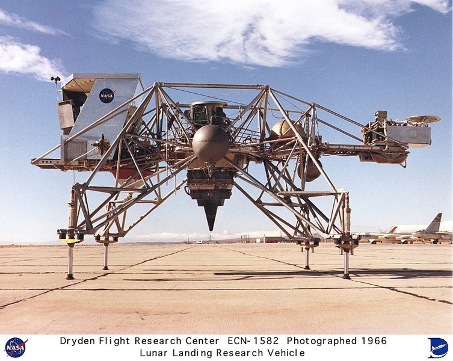

Ever since the dawn of heavier-than-air flight, inventors have tried to design new kinds of aircraft in order to achieve improved performance, introduce new capabilities, or just do something different. In this series we describe some of the stranger aircraft that have actually flown.
This month we celebrate NASA's ECN-1582 Lunar Landing Research Vehicle from 1966. This was one of several "test rigs" developed to help the Apollo astronauts practice landing on the moon. This remarkable aircraft had no wings or aerofoils of any kind because they would be useless on the airless moon. Instead the "flying bedstead", as it became known, used the brute force of a downward facing jet engine to propel itself. Although they served their purpose these experimental vehicles were notoriously tricky to fly. Even Neil Armstrong was forced to eject from one when he lost control!
